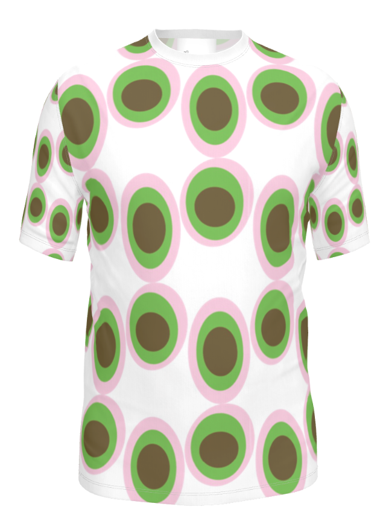

For this assignment, I created a repeated geometric pattern using layered oval shapes and a soft color palette. I used pink, green, and brown because they are some of my favorite colors, and I liked how they worked together in a playful but balanced way. The design also feels really reminiscent of early 2000s culture to me. My sister used to have notebooks and other items with patterns similar to this, so I wanted the piece to feel nostalgic while still looking clean and graphic.
I built the pattern using simple repeated shapes and used Illustrator’s pattern tools to organize the spacing and repetition. The design is based on color theory from class, especially the relationship between the colors and how they create contrast while still feeling soft. After creating the pattern, I applied it to a shirt mockup to see how it would work on clothing. I liked how the repeated design translated onto fabric because it made the piece feel more wearable and complete.
